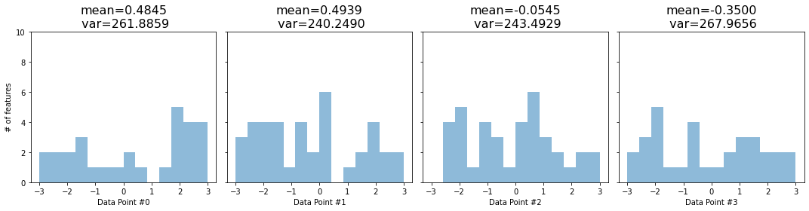
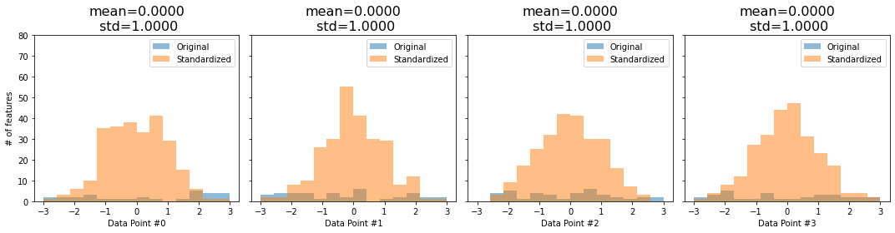

2. Layer Normalization¶
import torch
import torch.nn as nn
import numpy as np
import matplotlib.pyplot as plt
class PositionalEncoding(nn.Module):
def __init__(self, max_len, d_model):
super().__init__()
self.d_model = d_model
pe = torch.zeros(max_len, d_model)
position = torch.arange(0, max_len).float().unsqueeze(1)
angular_speed = torch.exp(torch.arange(0, d_model, 2).float() * (-np.log(10000.0) / d_model))
pe[:, 0::2] = torch.sin(position * angular_speed) # even dimensions
pe[:, 1::2] = torch.cos(position * angular_speed) # odd dimensions
self.register_buffer('pe', pe.unsqueeze(0))
def forward(self, x):
# x is N, L, D
# pe is 1, maxlen, D
scaled_x = x * np.sqrt(self.d_model)
encoded = scaled_x + self.pe[:, :x.size(1), :]
return encoded
d_model = 4
seq_len = 2
n_points = 3
torch.manual_seed(34)
data = torch.randn(n_points, seq_len, d_model)
pe = PositionalEncoding(seq_len, d_model)
inputs = pe(data)
inputs
tensor([[[-3.8049, 1.9899, -1.7325, 2.1359],
[ 1.7854, 0.8155, 0.1116, -1.7420]],
[[-2.4273, 1.3559, 2.8615, 2.0084],
[-1.0353, -1.2766, -2.2082, -0.6952]],
[[-0.8044, 1.9707, 3.3704, 2.0587],
[ 4.2256, 6.9575, 1.4770, 2.0762]]])
\[
\Large
\overline{X}_{n,l} = \frac{1}{D}\sum_{d=1}^Dx_{n,l,d}
\]
inputs_mean = inputs.mean(axis=2).unsqueeze(2)
inputs_mean
tensor([[[-0.3529],
[ 0.2426]],
[[ 0.9496],
[-1.3038]],
[[ 1.6489],
[ 3.6841]]])
\[
\Large
\sigma_{n,l}(X) = \sqrt{\frac{1}{D}\sum_{d=1}^D(x_{n,l,d}-\overline{X}_{n,l})^2}
\]
inputs_var = inputs.var(axis=2, unbiased=False).unsqueeze(2)
inputs_var
tensor([[[6.3756],
[1.6661]],
[[4.0862],
[0.3153]],
[[2.3135],
[4.6163]]])
\[
\Large
standardized\ x_{n,l,d}=\frac{x_{n,l,d}-\overline{X}_{n,l}}{\sigma_{n,l}(X) + \epsilon}
\]
(inputs - inputs_mean)/torch.sqrt(inputs_var+1e-5)
tensor([[[-1.3671, 0.9279, -0.5464, 0.9857],
[ 1.1953, 0.4438, -0.1015, -1.5376]],
[[-1.6706, 0.2010, 0.9458, 0.5238],
[ 0.4782, 0.0485, -1.6106, 1.0839]],
[[-1.6129, 0.2116, 1.1318, 0.2695],
[ 0.2520, 1.5236, -1.0272, -0.7484]]])
layer_norm = nn.LayerNorm(d_model)
layer_norm.state_dict()
OrderedDict([('weight', tensor([1., 1., 1., 1.])),
('bias', tensor([0., 0., 0., 0.]))])
layer_norm = nn.LayerNorm(d_model)
normalized = layer_norm(inputs)
normalized[0][0].mean(), normalized[0][0].std(unbiased=False)
(tensor(-1.4901e-08, grad_fn=<MeanBackward0>),
tensor(1.0000, grad_fn=<StdBackward>))
layer_norm.state_dict()
OrderedDict([('weight', tensor([1., 1., 1., 1.])),
('bias', tensor([0., 0., 0., 0.]))])
\[
\Large
layer\ normed\ x_{n,l,d} = b_d + w_d\ standardized\ x_{n,l,d}
\]
\[
\Large
layer\ normed\ x_{n,l,d} = standardized\ x_{n,l,d}\ \gamma_d + \beta_d
\]
2.1. Batch vs Layer¶
torch.manual_seed(23)
dummy_points = torch.randn(4, 1, 256)
dummy_pe = PositionalEncoding(1, 256)
dummy_enc = dummy_pe(dummy_points)
dummy_enc
tensor([[[-14.4193, 10.0495, -7.8116, ..., -15.4844, -18.0732, -3.9566]],
[[ 2.6628, -3.5462, -23.6461, ..., -0.9403, -18.4375, -37.4197]],
[[-24.6397, -1.9127, -16.4244, ..., -17.3708, -26.0550, -14.0706]],
[[ 13.7988, 21.4612, 10.4125, ..., -3.2333, -17.0188, 3.9237]]])

def hist_encoding(encoding):
encoding = encoding.cpu().detach().numpy()
fig, axs = plt.subplots(1, 4, figsize=(15, 4))
axs = axs.flatten()
for i in range(4):
data_point = encoding[i][0]
axs[i].hist(data_point, bins=np.linspace(-3, 3, 15), alpha=.5)
axs[i].set_xlabel(f'Data Point #{i}')
axs[i].set_ylabel('# of features')
axs[i].set_title(f'mean={data_point.mean():.4f}\n var={data_point.var():.4f}', fontsize=16)
axs[i].set_ylim([0, 10])
axs[i].label_outer()
fig.tight_layout()
return fig
def hist_layer_normed(encoding, normed):
encoding = encoding.cpu().detach().numpy()
normed = normed.cpu().detach()
fig, axs = plt.subplots(1, 4, figsize=(15, 4))
for i in range(4):
data_point = encoding[i][0]
normed_point = normed.detach()[i][0]
axs[i].hist(data_point, bins=np.linspace(-3, 3, 15), alpha=.5, label='Original')
axs[i].hist(normed_point.numpy(), bins=np.linspace(-3, 3, 15), alpha=.5, label='Standardized')
axs[i].set_xlabel(f'Data Point #{i}')
axs[i].set_ylabel('# of features')
axs[i].set_title(f'mean={normed.mean().numpy():.4f}\n std={normed.std(unbiased=False).numpy():.4f}', fontsize=16)
axs[i].legend()
axs[i].set_ylim([0, 80])
axs[i].label_outer()
fig.tight_layout()
return fig
fig = hist_encoding(dummy_enc)

layer_normalizer = nn.LayerNorm(256)
dummy_normed = layer_normalizer(dummy_enc)
dummy_normed
tensor([[[-0.9210, 0.5911, -0.5127, ..., -0.9868, -1.1467, -0.2744]],
[[ 0.1399, -0.2607, -1.5574, ..., -0.0925, -1.2214, -2.4460]],
[[-1.5755, -0.1191, -1.0491, ..., -1.1097, -1.6662, -0.8982]],
[[ 0.8643, 1.3324, 0.6575, ..., -0.1761, -1.0183, 0.2611]]],
grad_fn=<NativeLayerNormBackward>)
fig = hist_layer_normed(dummy_enc, dummy_normed)

2.2. Our Seq2Seq Problem¶
pe = PositionalEncoding(max_len=2, d_model=2)
source_seq = torch.tensor([[[ 1.0349, 0.9661], [ 0.8055, -0.9169]]])
source_seq_enc = pe(source_seq)
source_seq_enc
tensor([[[ 1.4636, 2.3663],
[ 1.9806, -0.7564]]])
norm = nn.LayerNorm(2)
norm(source_seq_enc)
tensor([[[-1.0000, 1.0000],
[ 1.0000, -1.0000]]], grad_fn=<NativeLayerNormBackward>)
2.3. Projections or Embeddings¶
torch.manual_seed(11)
proj_dim = 6
linear_proj = nn.Linear(2, proj_dim)
pe = PositionalEncoding(2, proj_dim)
source_seq_proj = linear_proj(source_seq)
source_seq_proj_enc = pe(source_seq_proj)
source_seq_proj_enc
tensor([[[-2.0934, 1.5040, 1.8742, 0.0628, 0.3034, 2.0190],
[-0.8853, 2.8213, 0.5911, 2.4193, -2.5230, 0.3599]]],
grad_fn=<AddBackward0>)
norm = nn.LayerNorm(proj_dim)
norm(source_seq_proj_enc)
tensor([[[-1.9061, 0.6287, 0.8896, -0.3868, -0.2172, 0.9917],
[-0.7362, 1.2864, 0.0694, 1.0670, -1.6299, -0.0568]]],
grad_fn=<NativeLayerNormBackward>)